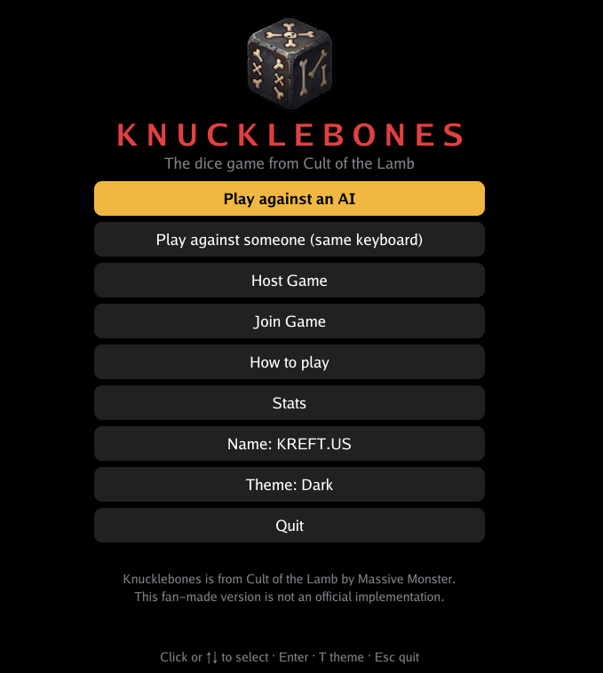
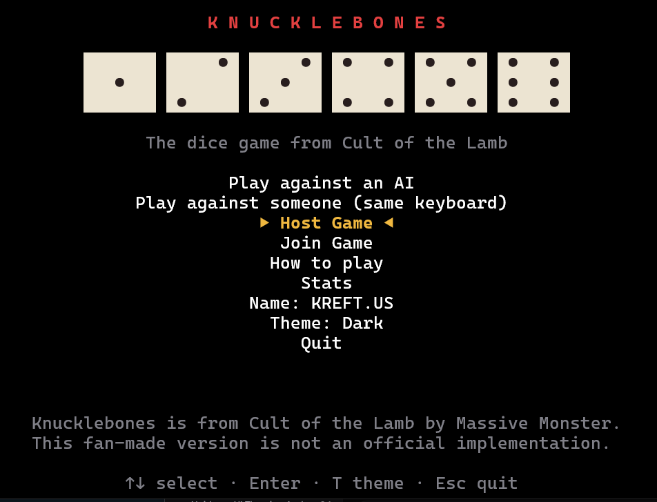
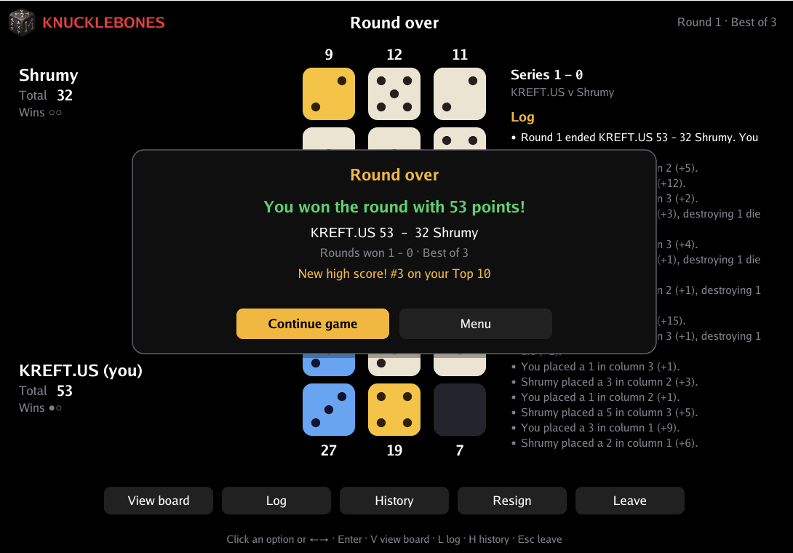
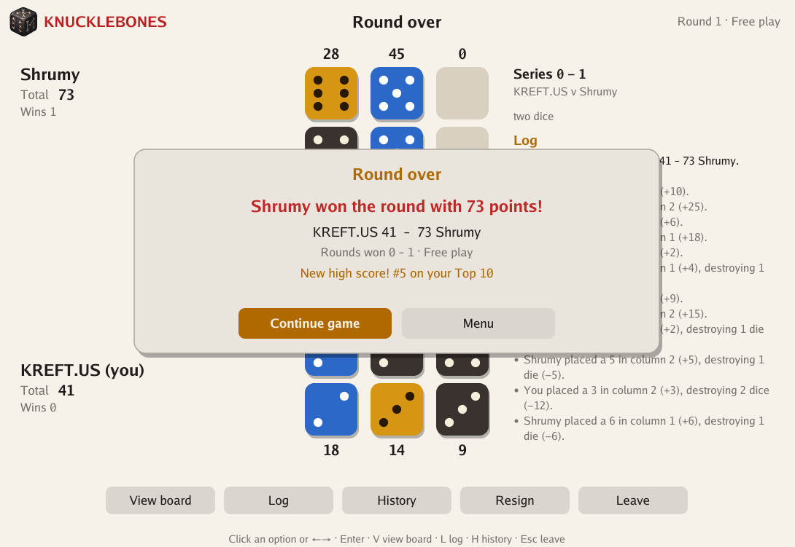
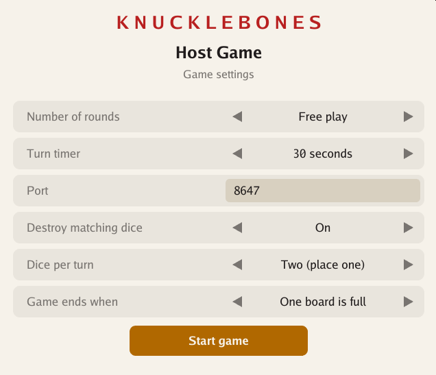

|





|
Knucklebones v1.0
Knucklebones is a cross-platform dice game from Cult of the Lamb, written in Go with tcell and Ebitengine. The terminal UI is the primary mode; a matching graphical window opens when launched with -gui or double-clicked in Explorer. Two players face each other across 3×3 grids, rolling a die each turn and placing it into one of three columns. Matching dice multiply in value, while placing a die destroys matching dice in the opponent's facing column. Challenge three AI opponents (Ratau, Flinky, and Shrumy), play local same-keyboard matches, or duel over Protocol v2 LAN/TCP multiplayer with optional HMAC-authenticated room codes and commit-reveal fair play.
Controls
Your Turn: ← → or A/D to select a column (or hover/click in GUI). Place the rolled die with Enter, Space, or digit keys 1–3. When the two-dice house rule is active, toggle the active die with Tab, Q/E, W, or ↑/↓.
Menus, Options & Setup: ↑ ↓ or W/S to navigate, Enter or Space to select, T (or ←/→ on Options) to cycle the 4 themes (Dark, Light, High Contrast, Parchment), Tab/↑/↓ on Join Game to switch between host address and optional room code, and Esc to go back or quit.
In-Game Toggles & Replay: Press S to mute/unmute sound effects, C to toggle colorblind marks, P to toggle the live Monte Carlo win probability meter, L for the full move log, H for match history, R to resign (with confirmation), Esc to leave, and V on round end to hide/show the result panel. Press X after any completed round to enter move-by-move Replay (←/→, A/D, Home/End).
Mouse (GUI Window): Click any menu button, column, tray die, side-panel pill (Prob [P], Sound [S]), text input (with caret placement), or action button beneath the board (including Replay < Prev / Next > / Done).
Updates
Downloads
Go Build: PC [ x86 / x64 ] Linux [ x86 / amd64 ]
↵ README
Features
- Dual Launch Modes & Compact TUI — Plays natively in modern terminals (tcell UTF-8 & 24-bit RGB, automatic Cascadia Mono on Windows, responsive down to
52×20) or as a resizable Ebitengine desktop window.
- Three AI Personalities — Ratau (Easy, random placements), Flinky (Medium, greedy immediate swing scoring), and Shrumy (Hard, full roll-expectation lookahead and endgame awareness).
- Protocol v2 Online Multiplayer & Fair Play — Host on a chosen bind interface and port with optional ephemeral room codes (challenge-response + HKDF-SHA256 / HMAC-SHA256 wire authentication), commit-reveal host dice verification, live placement aim previews, turn timers (15/30/60s), and 30-second disconnect grace periods.
- Synthesized Sound Effects (GUI & TUI) — Six procedural PCM sound effects (
click, place, destroy, turn, win, lose) play in both the graphical window and local desktop TUI (S or Sound [S] to toggle). Headless/SSH sessions (or KNUCKLEBONES_HEADLESS=1) and CGO_ENABLED=0 builds bypass PCM and fall back to throttled terminal bells.
- Preview, Impact Flashes & Win Probability — Live column previews show landing slots, doomed red dice, and score diffs (
8→24), paired with column impact flashes, floating +gain/-loss badges, animated opponent Thinking... state, and a toggleable Monte Carlo win odds meter (P).
- Round Replay & House Rules — Inspect any finished round move-by-move (
X), customize Best of 1/3/5 or Free play, turn destruction off, roll two dice and place one, or play until both boards are full.
- 4 Themes & Colorblind Accessibility — Switch between Dark, Light, High Contrast, and Parchment themes (
T) with single (ivory), pair (gold), and triple (blue) multipliers plus optional corner/top-edge marks (C: =, #, x/X).
- Persistent Statistics & Config Storage — Preferences, per-mode win/loss/series records, and the Top-10 scoreboard are saved atomically in your OS user config directory (
knucklebones.json; room codes are never written to disk).
|